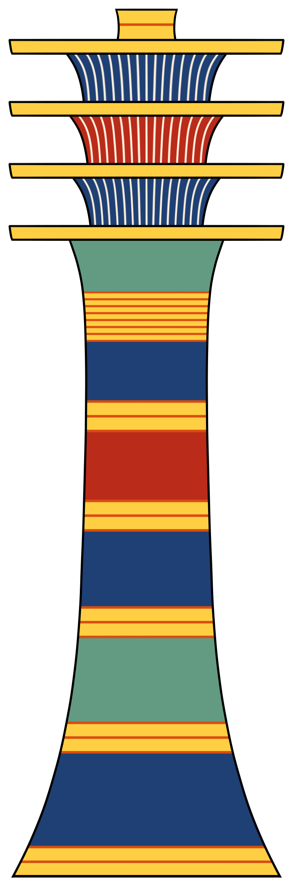

Что такое джед
Джед (егип. джед) — столп с четырьмя перекладинами — один из древнейших сакральных знаков: символ стабильности, стойкости, воскрешения. Его читали как «позвоночник Осириса», а столп — как ось, на которой держался мир.
Позвоночник Осириса
Миф связывает джед с воскрешённым царём: после растерзания Осириса Исида собрала тело бога, и столп стал его позвоночником — осью, «держащей» воскресшего. Фараон после смерти становился Осирисом, и джед гарантировал, что его «тело» не распадётся в загробном мире.
Праздник «воздвижения джеда»
В праздник Осириса фараон со жрецами совершал обряд «воздвижения джеда»: поднимали столп — знак воскрешения бога и стабильности царства. Обряд обновлял власть: столп стоит — мир стоит. Не путать с хеб-сед — юбилеем: воздвижение джеда — осирисовый обряд, связанный с юбилеем, но не тождественный.
Амулеты и саркофаги
Джед делали амулетом из золота или фаянса — ради стойкости в трудные времена; материал имел значение: дерево или зелёный камень — материал возрождения. В гробнице джед ставили на задней стенке саркофага под позвоночником мумии, — чтобы умерший имел силу «встать». Над амулетом читали: «Осирис встал, его позвоночник крепок, он не упадёт».